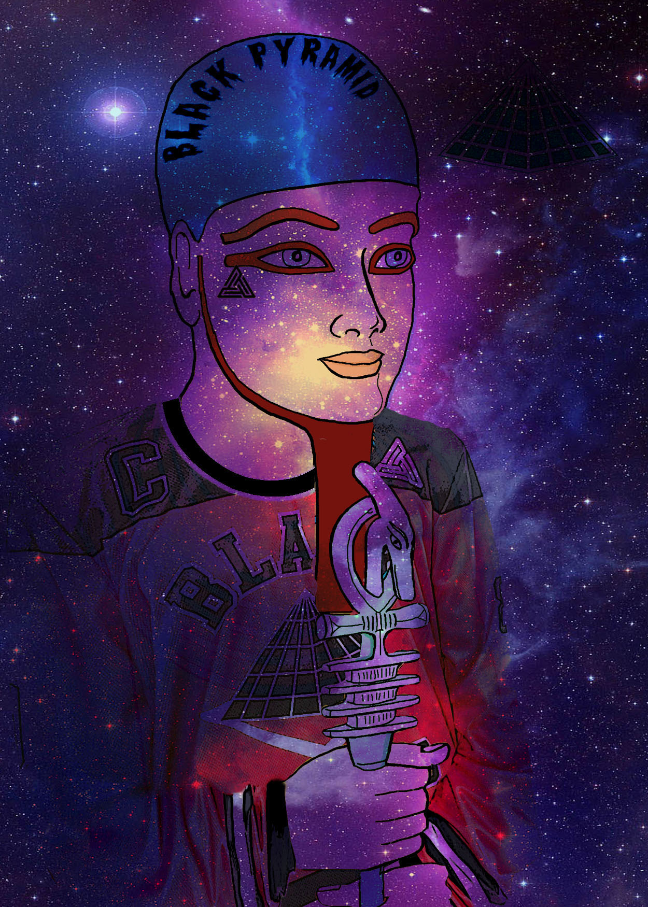

Art
Music
Music has been apart of my life since I was born. It is my go to whenever I'm going through something, it is my peace when my life is in chaos. Without it I wouldn't know where I'd be.
Designing Art
I feel like I've always had a thing about Art but I just never found the specific art type I was good at. I love music but I can't really rap or sing, I wasn't able to draw or play an instrument. So once I found out about graphic design and seen I was good at it, I ran with it and kept at it.
